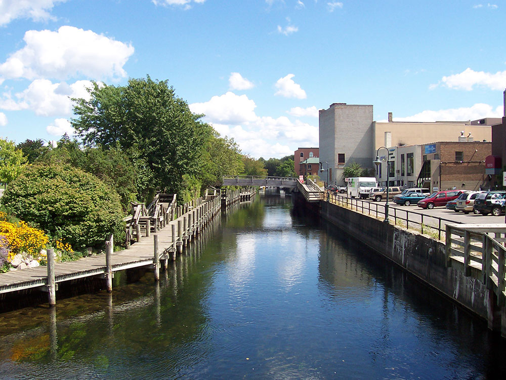
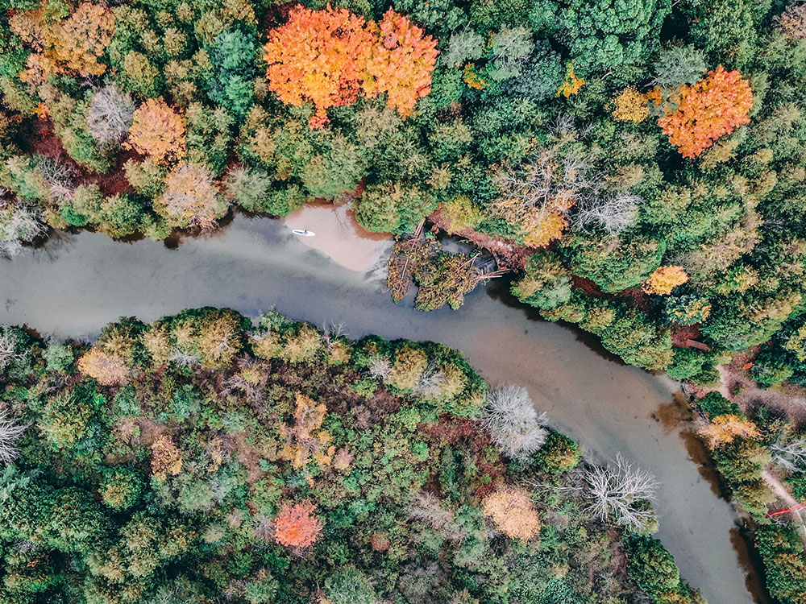
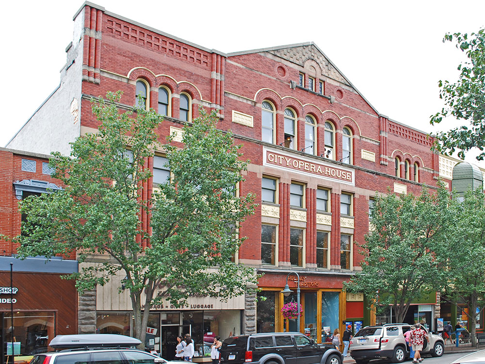
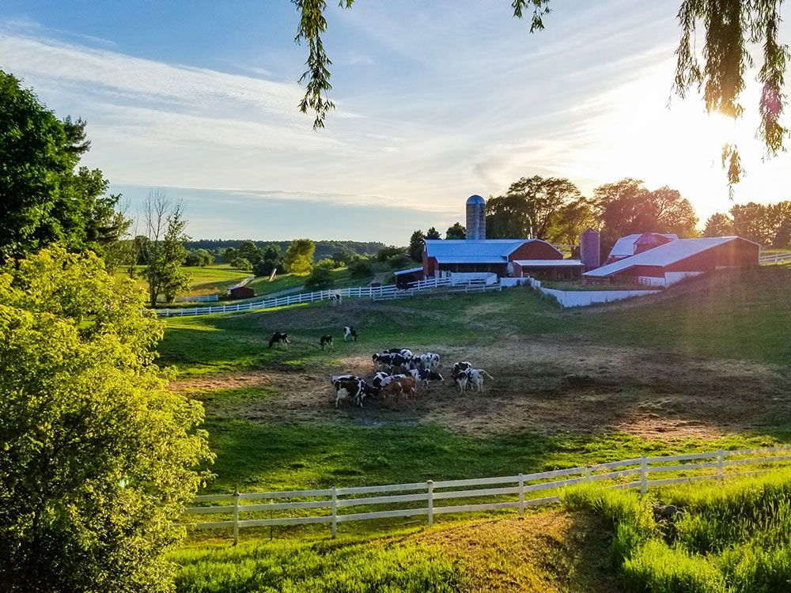
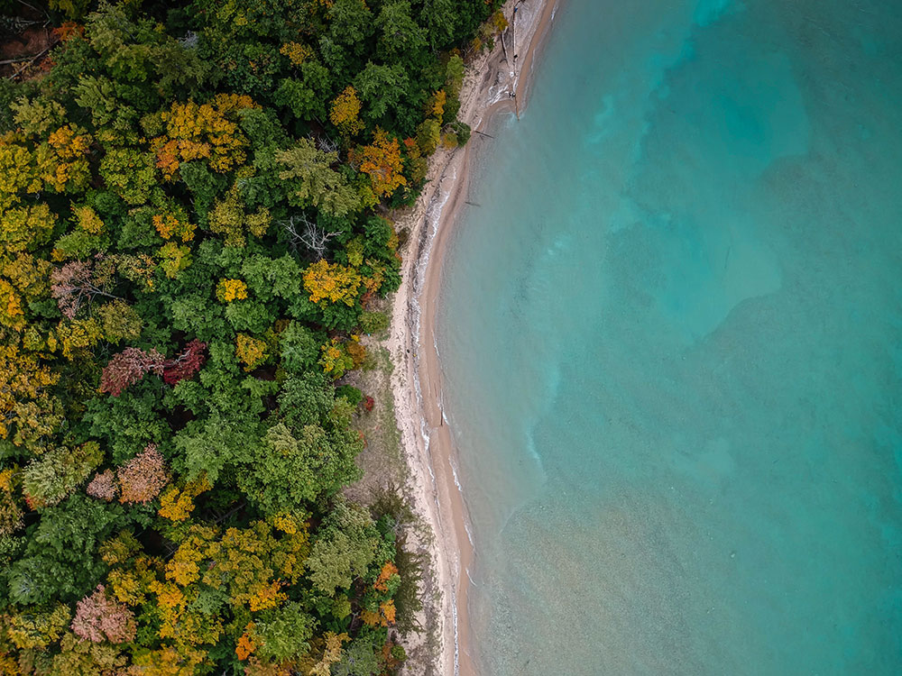
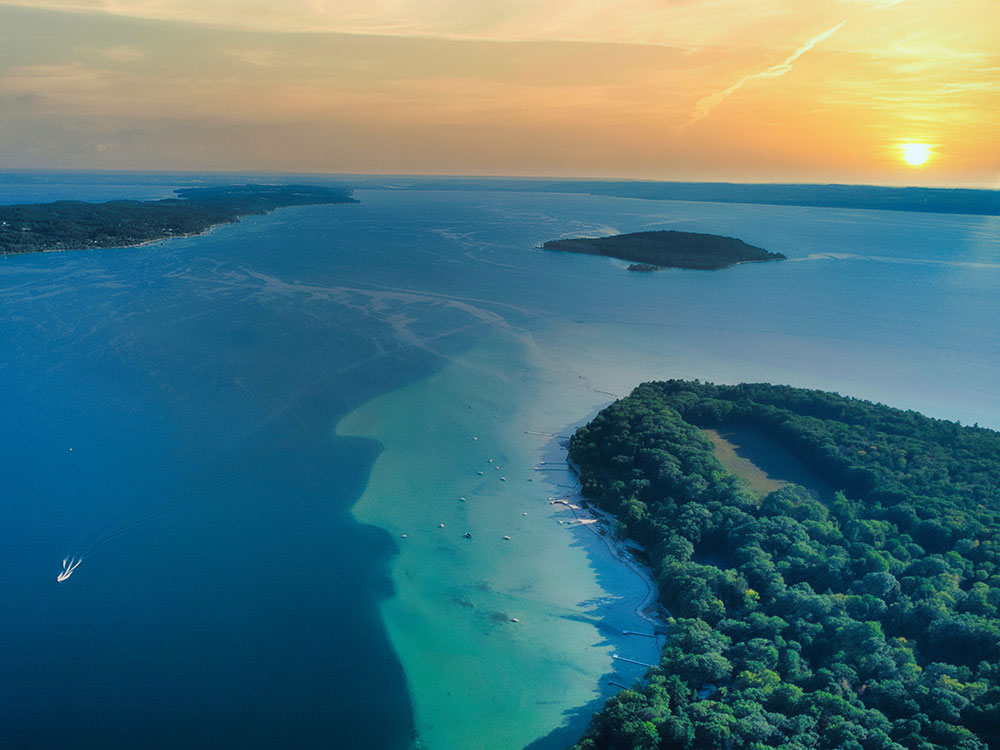
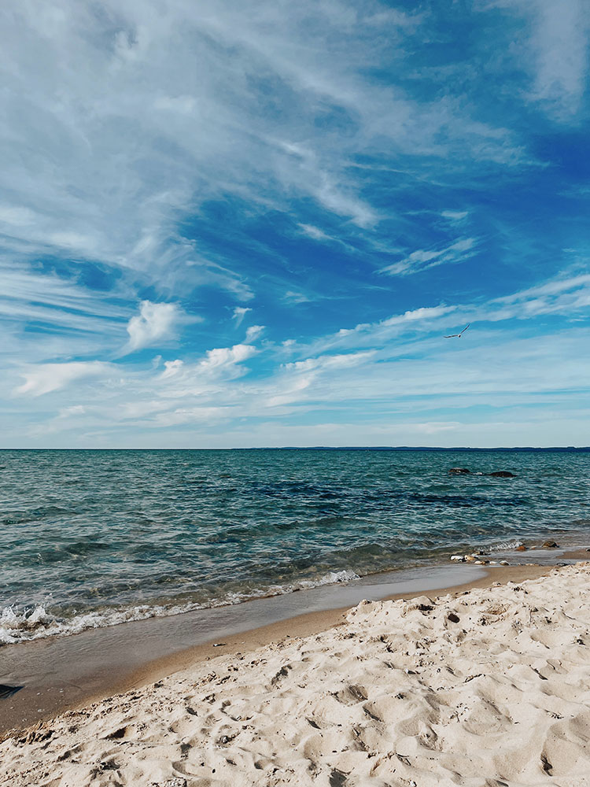
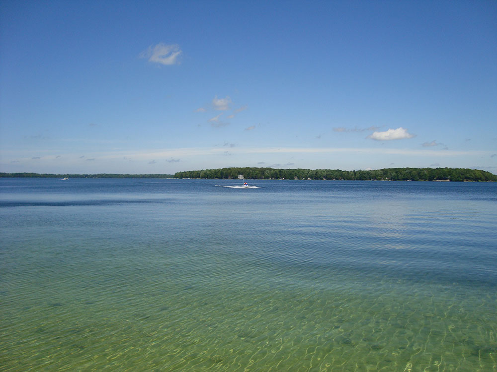
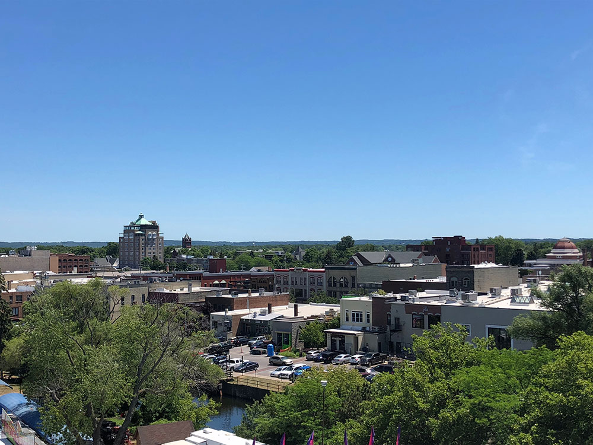

City and area featuring varied natural attractions, including freshwater beaches, vineyards, a National Lakeshore, downhill skiing areas, and numerous forests
General Information
How to Get There
Overview
Traverse City, Michigan, is the largest city in northern Michigan, on the shore of Grand Traverse Bay in the northwest corner of the Lower Peninsula. It is famous as the "Cherry Capital of the World," because the surrounding area produces most of the country's tart cherries, and it hosts the National Cherry Festival each July. The region is also known for its wineries on the Old Mission and Leelanau Peninsulas, its sandy beaches, and its location near Sleeping Bear Dunes National Lakeshore.
Visitors come to Traverse City for the beaches and water activities on the bay, for wine tasting, for the farm markets and cherry products, and for a lively downtown along Front Street with restaurants, craft breweries, and shops. It is a summer vacation destination and a winter sports area, with skiing nearby, and a good base for exploring Sleeping Bear Dunes, Leelanau Peninsula, and the Mackinac Bridge area.
History
The Odawa and Ojibwe people lived in the area long before Europeans arrived, and the name "Grand Traverse" comes from French voyageurs who made a "grande traversée" across the bay. Captain Horace Boardman established a lumber mill here in 1847, and the logging industry boomed until the forests were cut in the late nineteenth century. Farmers then found that the climate moderated by the bay was ideal for cherries, and the first commercial orchards were planted on the Old Mission Peninsula in the 1890s. The city's wineries began to develop in the 1970s, and the old Northern Michigan Asylum, which opened in 1885, has been redeveloped as the Village at Grand Traverse Commons.
Sightseeing and Popular Landmarks
Front Street is the heart of downtown, with shops, restaurants, and the historic State Theatre, and the Open Space park on the bay is the site of festivals. The Village at Grand Traverse Commons is a collection of restored historic buildings with shops, restaurants, and a winery, and the Old Mission Lighthouse is at the tip of the Old Mission Peninsula. Sleeping Bear Dunes National Lakeshore, about 25 miles west, has towering dunes, beaches, and the scenic Pierce Stocking Drive, and Clinch Park Beach and the shoreline of the bay are right in town.
Culture and Museums
The Dennos Museum Center at Northwestern Michigan College has art exhibits, including a collection of Inuit art, and the Con Foster Museum and the Music House Museum have exhibits on local history and music. The Traverse City Film Festival, the National Cherry Festival, and the Traverse City Wine and Art Festival are important cultural events, and the Interlochen Center for the Arts, a short drive away, hosts concerts and performances throughout the summer. The Old Mission Peninsula and Leelanau Peninsula have dozens of wineries and tasting rooms.
Parks
The area has beautiful natural scenery. The TART Trail is a paved trail that runs along the bay and through the city, and the Boardman River and Boardman Lake Loop Trail are good for walking and paddling. Clinch Park and the Grand Traverse Bay shore offer beaches, and the Sleeping Bear Heritage Trail links Empire and Glen Arbor. Old Mission Peninsula State Park and Interlochen State Park have camping, hiking, and water access, and Hickory Meadows and Pyramid Point have wide views of the lake.
Seasons and Weather
Traverse City has a humid continental climate that is moderated by Lake Michigan and Grand Traverse Bay. Summers are warm but comfortable, with highs in the upper 70s and low 80s°F, and winters are cold and snowy, with highs in the 20s and 30s°F and about 90 inches of lake-effect snow. Summer is the busiest season, especially around the Cherry Festival in July, and fall color and cherry blossoms in May are also popular times to visit.
Things to Do
Discover the Jewel of Northern Michigan
Traverse City is one of Michigan's premier four-season destinations, located at the southern end of Grand Traverse Bay on Lake Michigan. Known for its beautiful waterfront, award-winning wineries, outdoor recreation, vibrant downtown, and cherry orchards, the city serves as a gateway to some of the most spectacular scenery in the Great Lakes region.
Explore Downtown Traverse City
Downtown Traverse City features boutique shops, art galleries, cafés, breweries, restaurants, and historic buildings. Visitors can stroll along Front Street, enjoy locally sourced cuisine, browse unique stores, and attend festivals and community events throughout the year.
Visit the Wineries of Old Mission and Leelanau Peninsulas
The region is nationally recognized for its wineries and vineyards. Scenic wine trails along the Old Mission and Leelanau Peninsulas offer breathtaking views of Grand Traverse Bay while providing opportunities to sample award-winning wines, ciders, and locally produced food.
Relax on Grand Traverse Bay
The crystal-clear waters of Grand Traverse Bay provide excellent opportunities for boating, kayaking, paddleboarding, sailing, fishing, swimming, and sunset viewing. Waterfront parks and beaches make it easy for visitors to enjoy the area's natural beauty.
Experience Cherry Country
Traverse City is known as the Cherry Capital of the World and hosts the National Cherry Festival each summer. Visitors can enjoy orchards, farm markets, cherry products, and seasonal agricultural experiences that celebrate the region's most famous crop.
Top Trails
TART Trail
Length: More than 10 miles through Traverse City
Elevation Gain: Minimal
Difficulty: Easy
The Traverse Area Recreation and Transportation (TART) Trail is a paved multi-use pathway that follows portions of the waterfront and connects parks, beaches, neighborhoods, and attractions throughout the city. It is popular for walking, running, and cycling.
Sleeping Bear Heritage Trail
Length: Approximately 22 miles
Elevation Gain: Moderate
Difficulty: Easy to Moderate
Located about 30 minutes from Traverse City within Sleeping Bear Dunes National Lakeshore, this scenic trail passes through forests, dunes, beaches, and historic sites while providing some of the finest cycling and hiking opportunities in northern Michigan.
Old Mission Peninsula Trails
Length: Variable distances available
Elevation Gain: Moderate
Difficulty: Easy to Moderate
Several nature preserves and trail systems on Old Mission Peninsula offer beautiful views of Grand Traverse Bay, vineyards, forests, and shoreline habitats. These routes are ideal for hiking, photography, and birdwatching.
Boardman Lake Loop Trail
Length: Approximately 4 miles loop
Elevation Gain: Minimal
Difficulty: Easy
This popular trail circles Boardman Lake and features boardwalks, bridges, waterfront views, and access to natural areas close to downtown Traverse City. It is excellent for walking, jogging, cycling, and wildlife observation.
Sources: Traverse City Tourism information regarding downtown attractions, Grand Traverse Bay recreation, wineries, cherry orchards, festivals, and outdoor activities. https://www.traversecity.com
Additional information verified through TART Trails, Sleeping Bear Dunes National Lakeshore, and regional recreation resources covering the Boardman Lake Loop Trail, Old Mission Peninsula preserves, cycling opportunities, and outdoor recreation in the Traverse City area. https://traversetrails.org and https://www.nps.gov/slbe
Geography
Traverse City is a part of the greater Northern Michigan region. The city is the main inland port of the Grand Traverse Bay—a long, natural harbor separated from the waters of Lake Michigan by the Leelanau Peninsula, and divided longitudinally almost evenly by a narrow peninsula of tiered hillsides and farmland called Old Mission Peninsula.
The most prominent of the city's waterways is the Boardman River. Along with Boardman Lake, the river is part of the Boardman River Watershed. The Boardman's 287-square-mile (740 km2) watershed contributes one-third of the water volume to the bay and is one of Michigan's top-ten fisheries, with more than 36 miles (58 km) of its 179 miles (288 km) designated as a Blue Ribbon trout fishery.
The National Cherry Festival, held during the first full week of July every year, is a draw for tourists to Traverse City. The festival features parades, fireworks, an air show, election of festival royalty, live music, a pie-eating contest and cherries. It is estimated that the Grand Traverse region produces up to 360,000,000 pounds (163,000,000 kg) of cherries annually. The largest variety of cherry produced locally is the Montmorency cherry, or the "pie cherry". Other cherries grown in the region include the Ulster, or sweet cherry, and the Balaton (from Lake Balaton in Hungary), a cherry situated between the Montmorency and Ulster in terms of color and taste.
The Traverse City State Park, with about 250 campsites, is located three miles (4.8 km) east of downtown on 47 acres (19 ha) including a quarter mile beach on the East Bay arm of Grand Traverse Bay.
The Boardman River Nature Center is the interpretive center and management headquarters for the Grand Traverse Natural Education Reserve, a 505-acre local park and natural area.
This article uses material from Wikipedia as well as information from official tourism and institutional sources. Key references include Traverse City Tourism, National Cherry Festival, Sleeping Bear Dunes National Lakeshore, Dennos Museum Center, Village at Grand Traverse Commons, and National Weather Service Gaylord. Wikipedia material is from the article "Traverse City, Michigan", and is available under the Creative Commons Attribution-Share-Alike License 3.0.











